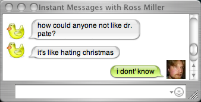
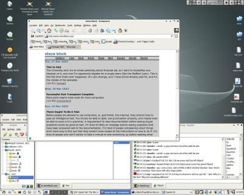

19 Sep 2003
The Other Steve Block
Search Google for Steve Block and you'll find quite a few people that I share my name with, but they tend to be fully grown boring people like I'll end up as someday. There's another Steve Block though who owns http://www.steveblock.co.uk/, and from the look of things my life comes in a distant second to his. I'm not sure how to feel about this. Somehow it means more that he appears to have lived a more exciting life than me just because we share a name.
Just check out his photo galleries and you'll see what I mean.
10:28
18 Sep 2003
Sam's Stunt
So I wanted Sam to move his G4 out of the living room. I gave him crap for a while but it was on and off and I hadn't said anything in a while, so when he finally moved it back into his room I assumed that he finally understood what I was getting at. Little did I know that he would take this to the next level. Last night he moved his TV, his stereo, his nintendos and everything else of his out of the living room and set it all up in his bedroom. Now it looks like we really haven't even moved in, and we're essentially wasting half of the apartment.
Whatever; it's his stuff.
All I wanted was to have a place where we could live, not just a playground full of toys. Even better, it looks like everyone but Alex finds this really funny. Thanks guys. Alex at least knows what's going on here.
<c> You can't just buy toys all the time. Steve is probably
frustrated because he wants a nice home but doesn't have the money
to
<c> on the flip side you do but are unwilling, but he can't say
anything because on balance most of the stuff is yours.
Alex, you're exactly right.
14:57
17 Sep 2003
C Says
From: Alex Leigh <aleigh@tessier.com>
Date: Wed Sep 17, 2003
08:51:27 US/Central
To: macd@cuttingedge.org
Dear cutting edge,
As a representative of evil I would like to let you know that you have some information that is factually incorrect on your web page. There is so much to choose from, but choose we must, so today we choose > this:
"Astral Projection -- Defined: "Leaving the physical body and traveling to another location or reality" [New Age Dictionary]. Potter: "They don't need the car!" said Ron impatiently. "They know how to Apparate! You know, just vanish and reappear at home!" [p. 69]"
In reality, Astral Projection is the act of projecting one's soul from their body either to the astral plane as a destination or through the astral plane to another point in space. However, only the soul travels; the body remains behind wherever it was in a sleep or coma-like state. Common signs of a projected person are a grey pallor, shallow, soft breathing, and a repressed cardiac rate.
This is partly your misrepresentation of Rowling's mistake; you both have confused Teleportation with Projection. I'll leave it between your parties to decide who is the wronger of the two.
Please correct your page, though; as informative as it is, it's a wonderful source-book for the young to learn the delightful possibilities.
Live short and painful lives,
Alex Leigh
21:34
16 Sep 2003
Ross Asks a Good Question

Somebody in Ross's class doesn't like Dr. Pate. That guy is lame.
23:33
15 Sep 2003
Major Server Issues
Our server, Diesel, is dead. Andy took it home and it probably won't be serving any pages for a long time now.
The network in the office Diesel hid in is dead and Andy decided that it was time to turn it into his PC. So long, Diesel! You will be missed.
Until I get something figured out this page probably won't be updated much. It's running off a cable connection in our apartment, which has a pretty poor upstream pipe. That means no photo galleries for now (sorry). I imagine that quite a few of the links on the right don't work either
20:29
14 Sep 2003
Canon Stuff
I just got a couple rolls of film back from Wal-Mart. Their one-hour processing sucks, but all I was really looking for was if the shutter issues with the Canon T70 were resolved and also to see how well the exposures matched with my older Minolta SRT100 at the same settings. Everything seems to work quite well. I might scan a few examples later, but for now I'm satisfied.
The only thing left to check is flash sync, but that will not only involve using my flash, but another as well, since I'm not quite certain that the hot shoe of my old Vivitar works properly.
20:29
13 Sep 2003
Another Year, Another Game
We lost to Iowa this year. The team just wasn't very impressive today. We'll get the Cy-Hawk trophy back next year though, I hope.
20:26
12 Sep 2003
Pull Me Under
I'm not afraid.
23:53
11 Sep 2003
Rain
It's finally falling. What has it been? A month? Two? I don't even remember. It's good to have some moisture, to feel the air cool down, to have a clean smelling breeze blow through my room. We need the moisture so badly, too. I'm happy for the rain.
21:17
10 Sep 2003
What The Hell?
A few minutes ago my wireless connection outright died for no good reason. I reset the WAP a couple times, and my network would appear, but only for a second. I rashly reset the whole thing, at which point the internet died for the non-wireless machines, because I apparently reprogrammed the original MAC address for the WAP incorrectly. It is off by a single hex digit on the last key from the hardware default. Essentially I made the problem worse. I fixed the MAC issue but I still couldn't see the WAP. When I change to a channel other than 6 it appears instantly, but if I change it to channel 6 the connection just disappears. What the heck is going on here?
21:10
09 Sep 2003
Steve's New Theory of Music Appreciation
If it touches you in some way, it's worth listening to, no matter what your friends tell you. If you later come to hate the song and wish you had never liked it, that just means you're changing, like everyone does. Musical preference is not static.
18:23
Happy Birthday
Happy birthday to Ross and Sam. They are both X years old, where X is a variable between 22 and 24 (I'm guessing 23). Sam is older, but Ross has a more vibrant hair color. Happy birthday guys.
15:03
08 Sep 2003
Brownies
I'm making Alex's brownie recipe. I sure hope it turns out. Once i master dessert I'll need to move up to side dishes or something. Heh, I'll learn to cook somehow.
20:18
07 Sep 2003
Cable Modem Info
I just found the information page for my cable modem (where the modem reports its status). The modem says that the connection is limited to 1500000 bps (1.5 Mbps), which is almost exactly what is reported by the DSLReports speed test. The upstream connection is restricted to 128000 bps (128 kbps), also almost exactly what is reported by the speed test. It's nice to know that our connection is running pretty much at full bore most of the time. Power and SNR ratings seem good too.
12:48
06 Sep 2003
Redhat 9
I switched the old Dell to Redhat 9 from Gentoo. I kept the home directory, which has all my files in it, so I haven't lost anything there. I just felt like trying something new, since I wasn't really doing anything with the machine anyways. Not sure if it really matters that I have X running, since it'll be headless in the end again. Oh well.
12:38
05 Sep 2003
I Made My First iTunes Music Store Purchase
I bought a Rick Wakeman album I have wanted for a long time. It only cost $5.94 because it only has six tracks. The Music Store is really easy to use, and with the cable internet connection I didn't have to wait very long at all.
I'm going to have to be careful; this could turn into an addiction.
12:23
04 Sep 2003
The Fluke
More Devin Townsend lyrics for you. Sorry.
...writing and eating and shitting and sleeping in rain or in shine masturbate till i'm blind in the cause and effect of the one troubled segment of time and the place and the look on your face and I write and I eat and I shit and I sleep yes I eat leafy greens nearly three times a week and I'm not unafraid but no longer afraid of you anymore...
00:25
03 Sep 2003
I Moved My Stuff
I moved my computer setup from the too-tall drafting table in the living room to the too-flimsy computer desk in my room. Its all part of a grand plan to convince Sam that his desktop machine needs to go back in his room.
It'll also be easier to look at teh nekkid ladies on teh intarweb.
22:31
02 Sep 2003
Barrycam!
I almost forgot this. It's Barrycam, and it's live. Go There!
22:53
In Search Of A Better Browser
It's fairly obvious that Camino isn't really being updated anymore. I hear that there are only a couple people working on the project now. Camino is/was great, and I hope that development picks back up, because it is a top-notch program and fits with OS X so well. Unfortuately it has also been crashing a lot on me as well, and is several versions behind in the Mozilla trunk.
I decided to try Firebird, since it's so very very nice on Windows and Linux, but since it uses its own UI it doesn't fit in with OSX very well and still feels slow. It also feels fairly rough around the edges.
So in the end I'm goign to give Safari 1.0 another try. It is stable and the UI fits with the OS and is snappy. Andy can just shut up and let me use the browser I choose, if he pleases.
22:52
01 Sep 2003
For Andy
My stupid network is acting up.
23:51
Ebay Is Nuts
Last night I was looking at a Canon A2e body with a not great but decent lens, and I decided to place a bid on it. At 2 minutes to the end of the the auction the price was $201 and had been that for a good long while. By the time I managed to submit my $252.50 bid, the price had jumped up to above that. The winning bid was $288.88. It's amazing how fast the bids come in after a certain point. No wonder it seems hard to win an auction there. Ben must have a special gift.
11:57
31 Aug 2003
Must Pay Rent
Don't want to incur any fines or anything.
00:28
29 Aug 2003
LKS and Oh My God
It was a good show last night. I'm glad I finally saw Oh My God, and wish that I had made one of their shows last year. The keyboardist was really cool, and the drummer was really good. The singer had a good voice as well, though he was a little strange.
LKS did well. As seems to be common they started off kind of rusty and then got into it as the songs went on. I've noticed the same thing at bigger concerts, so it's nothing unusual.
I think I'm going to start yelling "Remain Standing" at every LKS show until they play it.
13:10
Shutter Problems
Shutter > 500 doesn't open correctly. 500 is iffy.
More to come.
01:48
28 Aug 2003
T70 Update
I shot another roll on the camera today. I figured out how to restart the rewinding process. It's supposed to count the frames down as it goes, but for some reason it doesn't seem to work right. I hit rewind this time and it started rewinding, but the frame counter stopped moving back. I pushed the shutter release and winding started again. Based on the motor noise and vibration I thought that the film was completely rewound, but the frame counter still read 16. I went back and used my backpack as an emergency darkroom, and opened the camera. It looks like the machine rewinds ok, and it advances and counts frames accurately, but it doesn't properly sense movement of the film in reverse, so it thinks there is a problem and stops rewinding. Since I can sense the change in the motor movement I don't see why rewinding will be an issue, as long as I pay attention to what I'm doing.
I have plans to develop the film today (1 hour photo, probably) to check the camera's movement and metering capabilities. Hopefully it takes pictures just fine. I also plan to find a service manual so I can find out how the camera knows what frame it's on while it is rewinding the film. Maybe I can fix it, or maybe I'll just live with it. As long as the film makes it back into the canister and the exposure program is accurate, this is a far better machine than the Minolta.
13:42
27 Aug 2003
Slight Problem
I shot a roll of film with the T70 today. Everything worked just fine, until I rewound the film. Somehow it didn't rewind all the way (the camera actually seemed to know, because the display read 24 and I think it's it's supposed to count all the way back to one and then go blank). I opened the back and noticed that I probably hosed the whole roll. I'll have to figure out if there's a way to restart the rewinding process after it stops. I have another roll in there now, and I plan to go out tomorrow to take more pictures. It's quite possible that this is either a one-time deal, or I messed something up. I'll post an update when I know.
21:30
Canon T70
At the Used Possession Sale today I encountered a Canon T70 SLR with a 50mm F/1.8 Canon FD lens included for $50. For that price I figured it was worth the "as-is" risk associated with the sale. After wading through 2 and a half hours of class I finally got home, put batteries in, and loaded up a roll of film. The camera is kind of loud, but appears to work exactly the way it is supposed to. I think it might actually be the same model camera that my uncle Ron has had for years. Sure this guy is 19 years old, but the light meter seems to work, and for 50mm work this will definitely replace the Minolta. I can safely stow my dreams for a modern professional SLR away for later, when I save up more money.
16:37
26 Aug 2003
Cheating "Musicians" Piss Me Off
This is cheating. I am thankful that most of my favorite music doesn't appear to use this crap. I can tell because they are far from perfect vocally, and that's OK. Believe it or not I respect that, and it should be obvious that no one is perfect all the time.
15:57
School Started Again
I'm not sure if I'm going to like it or not. Maybe once I get my research started things will seem cooler, but right now it just feels like undergrad again, except harder.
10:23
24 Aug 2003
Another Successful Trip To Kansas City
Happy birthday to Adam, Catina, and Scott. Thanks to Scott for loaning me his couch for the night. It's odd to be back in Ames, knowing that I'm going to start school again tomorrow. I thought I was done the first time.
23:11
22 Aug 2003
Old Site Update
I checked again. It's really quite terrible. I think it must have been 1995 or 1996 when that went up. I can't change it now, because I don't remember the password, and my former contact email is long since dead.
01:26
My First Web Site
I checked to see if the first website I ever created still exists. It does, but I have mixed feelings of excitment and terrible, terrible shame. The site is awful, with a bad background, stupid content, terrible design, and godawful MIDI soundtracks. I was so proud of my use of frames. Now I'm proud that I don't use them.
Take a look, but don't say I didn't warn you.
01:24
21 Aug 2003
Colorado Pictures
The Colorado Pictures from this summer are up and available for your viewing pleasure. Sorry it took so long, but I lost my digital camera on that trip and had to wait for Robert and Liz to stop by with prints from their cameras. Some of these photographs were taken by me, but most were either taken by Robert or Elizabeth, or were timer shots. Enjoy.
18:58
Open Source
Alex and I had a discussion yesterday about Open Source software, SCO's claims on Linux, and other related things. While I don't want to bring a dead argument back to life, I thought that I would put up a link to one of my sources. You guys can judge for yourselves.
An interview with Linus Torvalds also has some interesting information in it. Of course the stuff I've posted is pretty one-sided, but the arguments are strong.
08:45
19 Aug 2003
KC This Weekend?
I plan to go, but as of now it doesn't look like anyone else will be coming with me. That's just the way it goes I guess. I long to break out of the whole all-my-time-in-Iowa thing, and others say the same thing, but go to Minnesota or something instead of KC. More often than that they just don't go anywhere.
Now I think it might be time to head to bed, as my powerbook is really fucking hot under my left hand.
22:46
18 Aug 2003
School Update
I have everything I need to register for classes, get health insurance, and get ready for school. It's a relief to know that everything will work out properly. I still need to get direct deposit stuff set up so that I can just recieve my paycheck, rather than waiting for it and cashing it. I also need to fill out a few forms at the Student Health center.
Otherwise, things look good for school. I have some seminar stuff tomorrow, and more on Wednesday and orientation is Friday. Yay, or something. School is starting again.
22:01
Intarweb
Now that Diesel is back up I can finally post about our internet connection. Mediacom told us that they would be here to set up the internet between 8:00 AM and noon on Saturday. We were up early, around 9 or so, and waited for them to get here. At about 11:45 we got a call from the installation guy, who said he would be here in 15 minutes. He showed up 25 minutes later. Apparently Mediacom didn't bother to tell him that we already had a cable modem, because he brought one with him. The guy knew what he was doing though, and everything got set up just fine. We now have our fine addicting internet, which will waste countless hours at the expense of my productivity.
09:03
13 Aug 2003
Party Update
Alex and Victoria must show up. They are required.
12:16
11 Aug 2003
Housewarming Party Update
OK, no matter what you fools do to try to get out of it, this Friday evening is the date set for our spectacular housewarming party. Everyone who reads this is invited, I suppose (though personal friends are given priority and must show up on pain of death). Plan to come to 2101 Oakwood Rd. #213 in Ames around 7 or so. Earlier is probably OK. We will have food of some kind (working on it) and hopefully good times will be had by all. If you want to amplify the party atmosphere I recommend bringing a beverage of choice. If you like you can bring something like chips or dip or salsa or dessert or anything else you feel will enhance the experience. Also, feel free to bring things that are fun, so maybe we can play some games (Ben, Andy, I'm thinking like drunken Jenga). Also if anyone feels the need to crash we have a pull-out couch and a somewhat soft floor, but no extra pillows (plan ahead).
If things go well there may even be intelligent conversation and debate. I am now going to name people who have to be there: Andy, Ben, Ross, Samm, Lisa. People who should come but will be forgiven because they are a long ways away: Dusan. People who are quite welcome to come: Sarah, Tom, Laurence. People who I would really like to see come but will forgive them if they don't make it because they have to drive a ways: Alex and Victoria.
So plan to show up at our place Friday night at 7. Parking is no problem, just find a place in the lot. Any suggestions you might have just send to scblock at iastate dot edu or call me at 515 450 2044.
21:57
08 Aug 2003
Got Some More Cooking Stuff
I bought some new pots and pans this evening. The ones we had had serious sticking issues, and I thought it would be good to just go buy some decent ones that wouldn't cause problems. After much debate (20 minutes or more) we settled on pretty much the exact same pots that my parents have, because they are relatively inexpensive and I know how they perform (rather well). Now hopefully we'll be able to fry eggs and cook noodles without spending the next 20 minutes trying to scrape the remains off of the pans.
23:58
06 Aug 2003
It's Late, So I'll Be Deep
Watched Magnolia tonight. I'm not quite sure what to think. I'd like to say that it's a good movie, but I'm afraid that would sound pretentious, since I really didn't understand a lot of it. It made sense all the way through, until I tried to put things together, at which point everything went haywire. There were a few things that I really liked though. One of them was Earl's nurse, Phil. He was an honest, caring, empathic person. Another was the cop, whose name I can't remember. He was another of those honest caring types. I think that those characters mean a lot to me because they are the kind of people I wish I was. I wish I could be as honest and compassionate as they were. I wonder if it's really possible for any of us to change who we are.
Now that I have the deep stuff out of the way, it's time to be a little more shallow. I finally drank the bottle of Chimay I bought when I got back from KC. It really is good, and the size of the bottle means that little else will get done if you drink it. I've also noticed that Sam bought a bottle of Shmirnoff and is spiking his Snapple. I don't think he's actually putting that much in, but it's still strange to see sam drinking anything. Makes me wonder, really.
When I get hold of a good internet connection I plan to go through Alex's photo galleries and choose a couple pictures that I really like. We are in desperate need of some decoration on these bare walls, and an original work of photographic art would be a more interesting way of adding something to the apartment than just buying something mass-produced. I'm also considering having a few of my photographs blown up so I can put them up as well.
There may also be some plans to have a housewarming party here sometime, though I'm not sure when. I kind of want to have a grill and maybe a dining table and some chairs first. I'm spending money left and right already and I can't afford much, but maybe a good deal will pop up at a garage sale or something. Besides if I give enough notice we may get some visitors from KC to come as well. If anyone has any good ideas for a date or anything, or has some times that absolutely will not work, let me know. The more I know about what you are doing then the better any gathering will be.
And that's it for tonight, folks. For more news, stay tuned for the next few days or something.
00:55
05 Aug 2003
Kansas City Pictures are Up
It took forever, but I rescanned the images that I wanted to put up with a quality slide scanner yesterday, saving me the trouble of fixing all the dust marks that were on the original scans of the prints. Then I had to deal with two slow computers making life hell, but it was all worth it. The photographs I took with Alex's camera are up, so go check them out.
10:35
04 Aug 2003
We Have Moved In
There was a lot of stuff to move, and I still have a lot of stuff to sort through and put away, but Sam and I now live in our new apartment. We have contacted Mediacum, and hopefully we will soon have some internet action going on. We have no regular phone, but that's OK because the Verizon reception is very good in there.
Soon we will have some kind of house warming party, but I'm not quite sure when. If you haven't come over yet, don't feel left out. I haven't even managed to sit back and drink a beer yet.
07:22
31 Jul 2003
Andy's New Page
I think I like this design. I can read it, and somehow it even screams "Andy" even though it's got larger fonts than he's had in years. Good work, Andy.
16:44
30 Jul 2003
Sleeping To Dream About You
I've been listening to a lot of Jason Mraz lately. No good reason why, I guess I just like his music.
I'm dreaming of sleeping next to you I'm feeling like a lost
little boy in a brand new town
I'm counting my sheep and each one that
passes is another dream to ashes
and they all fall down.
As I lay me
down tonight,
I close my eyes and what a beautiful sight
I'm
sleeping to dream about you
I'm so tired of having to live without you
So I'm sleeping to dream about you and I'm so tired
I found myself
in the riches (Your eyes, your lips, your hair.) Well you were everywhere
But I woke up in the ditches. I hit the light and I thought you might be
here
but you were nowhere. You were nowhere at home.
As I lay me
back to sleep
Lord I pray that I can keep
Sleeping to dream about
you
I'm so tired of having to live without you
So I'm sleeping to dream
about you and I'm so tired
(It's just a little a lullaby to keep myself
from crying myself to sleep at night.)
Sleeping to dream about you
I'm so tired of having to live without you
So I'm sleeping to dream
about you and I'm so tired
00:59
28 Jul 2003
Kansas City At Night
On Saturday night (Sunday morning) Alex took Jen, Bryan, Mike, and myself around KC to take some night photographs. Mine will have to wait until the film gets developed, but Jen put some up in her gallery. I especially like this one. It's very chill.
Check out the rest of her KC gallery here.
09:41
I Made It Home
But I miss KC already. I'm going to take my film in tomorrow, hopefully we'll get to see how well I took pictures this weekend.
To Alex and Victoria, thanks for letting me stay at your place and showing me around this weekend. I really appreciate it.
To Adam and the whole FAZED crew, it was awesome to meet you guys and I hope we get together again sometime soon.
00:48
27 Jul 2003
We Need Some Updating Going on Here
Andy: July 19 (don't believe 7.29.03)
Ben: July 19
Sarah: July 20
Ross: July 21
For the record, today is July 27.
13:34
Laser Tag Rocks
It's like playing an FPS, but for real. You can actually shout to your real teammates and glance around real corners. You can run strategy and all that too. It's one hell of a workout as well. THe only thing I didn't like was the teenage douchebags that showed up and started doing the "human shield" thing and jumping up and down and just plain being cheating assholes.
10:32
26 Jul 2003
I Have Landed
Here I am, posting from Alex's apartment in KC. I landed safely and found everyone nicely at Old Chicago, thanks to Adam's splediferous directions. Things are good, intarweb is good, and I would like to now shout out to Andy and Lisa. You two should be here, meeting people and having fun. Alex wishes you were and so does Victoria. I would ask you to be less lame next time and show up.
01:39
23 Jul 2003
That C
13:38 <c>Someone needs to make some sort of effort to catalog various
foods and what effect they have on vaginal juice taste.
13:39 <c> For
example, what do I need to feed victoria if I want more of a rasberry bouqet in
her offering.
13:41
Colonial Boy
It's going to be a very long couple of weeks before I start working for Dr. Pate. Thankfully I have some Devin Townsend to listen to.
If you ever need a friend in me
Ever need a friendly
feat
Please don't ever let me slip away... yeah
Please don't ever let me
slip away
What I'll miss in the travesty
Is easier than it needs to
be
Please don't ever let me slip away... yeah
Please don't ever let me
ever slip away
'Cause it's cold in your fantasy
I'd do or say
anything
Sell me, tell me, I'm wild
I'm wild
As I am in your
fantasy
I'd do or say anything
I dance for thee 'cause we all enjoy
A
wild colonial boy
And it's all that I need to be
I'd do or say
anything
Tell me, help me, I'm wild
I'm wild
As I am in your
fantasy
I'd do or say anything
I dance for thee 'cause we all enjoy
A
wild colonial boy
A wild colonial boy
A wild colonial boy
A wild
colonial boy
13:27
20 Jul 2003
Loot
The last couple days have been full of loot getting. On Friday I finally joined the 90s and got a cell phone from Spring Valley Wireless. It's pretty sweet and I already have a bunch of phone numbers programmed into it, so I can harass all of you more often. My last post has the number, if you want to reach me.
The real loot isn't mine, but Sam's, and it happened yesterday. I called him around noon asking if he wanted to hang out, and he said he was eating with his family but would stop by later. When he pulled up he was driving a black Celica and looking happy. He was test driving it, and loved it (even though I wasn't so sure about that car). His parents convinced him to think about it some more, and Sam and I went off to look at stuff in the Lincoln Center strip mall. After that we went down to Des Moines because his parents called and said they were at the Toyota dealership down there and wanted him to come look at a car. When we got there they were already in negotiations and had decided to buy the car. Crazy stuff.
So now I have new loot, and he has even more new loot. It was a loot filled day indeed.
13:31
18 Jul 2003
I Got A Phone
Want the number? 515-450-2044
23:40
16 Jul 2003
More Tcl News
I'm learning some things, though the ability to write something simple like reading a list of the files in a directory into an array, list or file and then comparing that list to a similar list created from another directory still eludes me. Something tells me it's extraordinarily easy, but I am an inexperienced scripter/coder. By the time I figure this out I think I'm going to have the task that I plan to code this for done.
19:54
13 Jul 2003
Sony Vaio
Benny pointed out that Sony has a new Vaio desktop case that looks to be in a similar style to the G5 case that Apple introduced. I would like to point out that Apple would never put ugly ass stickers on the front of the case.
20:33
12 Jul 2003
I'm Looking For A Challenge
So I think I might try to learn some TCL scripting.
11:06
10 Jul 2003
Hey Andy
09:33
It's Almost Official
I got a message from Dr. Flugrad and another from Dr. Pate. It looks like I'll be accepted and get paid no problem. They're going to draft a letter of intent and some other paperwork stuff. It's with no little relief that I hear this information, since I've been worrying about it a lot.
In other news, I think I'm heading down to KC soon. It should be cool.
00:06
09 Jul 2003
Diesel's Back!
I'll put a real good update here soon, but I need to start working again.
10:54
22 Jun 2003
Just For You
Ross!
01:01
21 Jun 2003
Another Wedding Today
Emily Olson got married this afternoon. That's two weddings in as many days. It was a very short (20 minutes) ceremony, and the food at the reception was excellent. All in all it was very nice, though Sam had a rough time of it near the end. Poor guy.
Jeff and Foy showed up late. Apparently John Bessman also got married today as well, and they were at that wedding. Way to go John!.
21:18
20 Jun 2003
Robert's Getting Married Today
Actually if I remember correctly they are at the courthouse right now doing whatever it is you do to get hitched in a civil ceremony. I've got to run off and get ready for the reception now. Hopefully it won't be boring, or I'll have to make excuses and jet out of there.
One more wedding tomorrow, then one day of work, then Colorado.
15:49
17 Jun 2003
Ross Needs To Update
Because we love what he has to say, we would love a new update from Mr. Ross!
22:06
16 Jun 2003
Looks Like I'm Going To Colorado
Somehow or another Robert managed to convince me to come with him (and his soon-to-be-wife Elizabeth) to Colorado on a ten-day hiking and climbing and backpacking and camping trip. I don't know how good and idea this really is, but I just spent $200 on gear. I'll also have to take almost 2 weeks off of work, which will cost me a lot more money.
I don't know whether to be excited or pissed off at myself.
21:57
14 Jun 2003
Where Do You Stand?
Check out your political leanings on The Politcal Compass! Mine
are:
Economic Left/Right: -2.25
Authoritarian/Libertarian: -4.00
17:42
13 Jun 2003
Recompiling...
I'm recompiling Diesel's kernel right now. Hopefully that will improve the performance of the machine some. I just found out that DMA wasn't on. If the new kernel still doesn't turn DMA on automatically I'll add the commands to do so to the startup scripts. This might just make Andy happy, and not hate Gentoo so much.
20:38
Friday The 13th
It's Friday the 13th, but I'm not scared.
Sam and I looked at two bedroom places in Oakwood apartments today. I was quite impressed, and I really can't think of anything I saw that I didn't like. The living rooms were large and wide open, the bedrooms were of a decent size, there were decks, kitchens with dishwashers, closets, and other things. I have a feeling that we're going to take a room in this place, and all that we have to decide is whether to live on the ground level or the second level. I'd like to live on the terrace level because it has huge decks, but no suchk luck because it's all full already.
I hope I can afford this, I've never had to pay for a place to live and go to school at the same time.
20:18
10 Jun 2003
I'm Getting There
Slowly but surely I'm getting things lined up and worked out for fall. Maybe even by the end of the week I'll know where I'm going to live and have everything ready for getting into grad school. I sure hope everything works out the way I planned it to.
21:30
07 Jun 2003
Andy, Where Are You?
I haven't seen Andy Buck in quite a while. I haven't talked to him or even seen him online in days. Ben said that he was on IRC for a while on Thursday, but I must have missed him. I called him twice on Thursday, but never got a response. I even tried stopping by his place with no luck. So where is he?
He hasn't updated his main page in a while either, but I noticed that there are some new galleries put up that are dated June 6. I think that means that we can assume that Andy has not died, contrary to popular conjecture. My best guess is that he went off to Iowa City, but didn't tell anyone about it. He's probably been in a drunken stupor for the past three days or so. It would be just like him if that was true.
We love you anyway, Andy.
08:48
06 Jun 2003
Scary Skies Over Ames
There were some really cool clouds over Ames today around noon. The sky to the north was pretty much black. I took some photos with a digital camera at work. Check them out.
15:58
05 Jun 2003
Exit The Warrior
And what you say about his company is what you say about society.
16:13
04 Jun 2003
Rearrange Your Life
The grand rearrangement project has begun in the basement. So far I've moved the small entertainment center from the west wall to the north, turned the futon around, and moved a bunch of my crap out of the main walking area. I have the receiver hooked up and running, and I've attached the Sony speakers, DVD player, and TV.
One of the big things I did was move the Dell over to the entertainment center and hook it up to the receiver. With the help of X11 and X-Forwarding over SSH I use the PowerBook to control the Dell. Since the link between these two computers is through a wireless router, I can control what music is playing on the receiver from anywhere in the house. It works very well. Right now I use xmms to play the music, but my goal is to find a nice console based music jukebox and use that instead, so that I can open a screen session and run the jukebox in there. That would allow me to start up some music and detach the session with the music still playing. That appears to be impossible with xmms.
I had a whole crap load of stuff that had no good storage options, so I went shopping for plastic storage with Sam. We found some nice Rubbermaid stuff at Lowe's, and i bought two large shallow containers, one large deeper container, and a media case. Now all my DVDs, video games, and random cables are pretty well organized and easy to move around. Hopefully that will get me started on controlling my insane overflow of random crap. I still have the deeper container to put stuff in, but the other three containers are completely full.
I should just get rid of some of my crap.
16:50
31 May 2003
Golf
Robert is back in town, and today seemed like the perfect day to inaugurate another season of bad golf play. We decided to play Homewood, like always, and headed out there around 1:00 PM. A word of caution to those who haven't been out there on a weekend yet this year: nine holes is now $14.50 on the weekend. That's really too much for a marginal 9-hole course, and I think I'm going to have to go out and find a nicer course that doesn't charge so much. I think there are some nice 18-hole courses around here that run about $20, which would be a much better deal. Anyway, today was a day for excellent tee shots and terrible approach shots. On almost ever hole I hit a long straight drive (usually with a 3-iron) that landed either near or on the fairway. I then proceeded to cock it up badly. For example on the sixth hole i landed 20 feet from the green on my first shot and hit it right over by about 30 yards.
I usually don't even bother to hit my woods when I golf, since I tend to have a wicked slice that is only amplified by the low lofted clubs. I tried my 1-wood on the seventh hole anyway, and I drilled the ball well over 230 yards, and straight to boot. That meant of course that I was off the fairway to the left, since I usually aim left to somewhat counteract the slice. Then I tried the 5-wood on #8 and hit it a good 200 yards, straight and high. Maybe I'm starting to gain some control over the drivers. It really doesn't matter though, because I can't putt to save my life.
Ben, Ross, and anyone else who wants to go, lets set up a golf outing sometime soon.
16:49
30 May 2003
Summer...
Well, two weeks of summer down, some more to go. My job is going OK like always, but I definitely need a change. The Next Big Thing I do will probably be to actually get enrolled at ISU again. I honestly didn't expect to be doing this, even a month ago. Life just comes as it does, I guess.
In other work news, I now get to drive the tractors around. It's like people trust me or something. I can also drive the skid steer loader, and for stupid/ignorant people who don't know what that is (because you really do even if you don't recognize the name) here is a link. The loader at work looks exactly like that (though we have several custom made attachments in addition to the standard bucket). So Liz, Sam, etc: that is a skid steer loader, and you have seen one before, because they hang around this town all the time.
23:45
27 May 2003
Wireless?
I got a Linksys Wireless Router (802.11g) today. It's doing a fine job with the minimal tasks I have set so far, which is pretty much just networking the desktop Dell with the PowerBook without having to have the PB plugged into anything. I have Samba set up so I can access the files stored on the Dell from anywhere in the house, and everything works just fine. Now all I need is a decent internet connection so I don't have to go find a phone line any more.
23:05
26 May 2003
Mount Everest
Quicktime VR from the highest peak in the world.
23:44
25 May 2003
BMW
Andy let me take his BMW home with me last night. I drove it around for a good bit, and it is the fastest car I've ever driven. That really doesn't say much for the cars I've driven, I guess, but it sure was a lot of fun. Now I understand part of the reason he drives the way he does. The way that car accelerates and handles, and the way it always seems to have more power just waiting for you makes it almost impossible to not cock off in it.
Now I really wish I had bought Alex's car.
18:37
24 May 2003
Sam, Andy: We Need To Find An Apartment
I would like to know where I am going to live next fall, you know? Oh, and our network should look something like this.
11:44
23 May 2003
Wireless Is Handy
I got pissed off at the internet at home, so I decided to come to campus and use the superior internet here instead. Right now I'm in 139 Durham, but it's a very pleasant night and i think I might head outside to enjoy it, while sitting on the interent. I know it seems silly, but it really is a nice night to sit outside and do some internet stuff, and that is where wireless comes in handy. Besides, I didn't feel like plugging in anyways.
19:27
22 May 2003
Grad School?
Dr. Pate responded to my email. There seems to be a pretty good chance now that I'll be going to grad school. Looks like I'll get to hang out with Ross some more. Yay!
21:39
21 May 2003
Happy Birthday
Happy birthday to Lisa and Andy, who are now both 22 years old. Whee.
00:34
20 May 2003
Xbench Freaked Me Out
I ran Xbench on my PowerBook after I got terrible performance in the UT2003 demo. It was almost unplayable, and I remembered some sluggishness earlier when I was using the machine. Then I ran Xbench and got an overall score of 53.41 and almost freaked. I wondered if my Al was somehow really slow. Then i remembered power management stuff, and it turns out that I have been running with the processor set to "Reduced Performance" for two days. I set that before I left to save battery life during the car ride to Missouri, but I really didn't need that setting enabled any more. I turned the processor back to full speed. and my scores jumped to 73.89, which is right in the middle of the average 12" PowerBook scores. My UT framerates shot way up as well.
I guess the moral of the story is if your Mac laptop seems sluggish, check the power management settings before you freak out about having problems with the computer.
00:08
19 May 2003
The Weston Galleries Are Up
I'm here at Sam's house using his internet connection to upload my files, so I have the photos from Weston up now.
Also, here is an edited photo of my little cousin Erica. Yes, I used a filter, but I also made extensive use of layers, levels, curves, and color balance tools as well, so I'm not totally lame.
22:24
18 May 2003
Angela Hoffman's Graduation, Weston Missouri
This weekend was a 'big' family trip down to Weston to see Angie and the rest of the Hoffmans. Angie is graduating from West Platte High School today as a co-valedictorian. Of everyone who is probably reading this page, I think that only Sam has met her before. She showed us around Weston a bit when Sam and I came down to see Rush at the Sandstone ('Verizon Wireless') Amphitheater.
Our trip started on a somewhat sad note. We first went down to Des Moines on Saturday morning to see my little sister Anne play a soccer game. The got beat pretty bad. Annie and my Dad stayed home because she had two more games to play this weekend. That meant that only four of us, the three 'big kids' and our mom, went to Weston.
Weston was just as nice as I remembered it, a tiny little town with narrow streets and a lot of hills. People are friendly and there are a lot of neat old buildings, as well as a thriving downtown. It's really a very interesting town, with a lot of good photographic opportunities. I feel like I should stop there again on my next Missouri photographic trip. Actually I might take some of you along too. There's a bar there that Andy absolutely has to see. Maybe Sam would even feel like visiting again. He could get another espresso at the candy shop.
We arrived around 3 P.M., about two hours before the official start of the graduation party. In typical fashion, things weren't ready by then. In atypical fasion, my cousin Greg and uncle Ron were in a rush to finish the new patio. At least I don't think most people are working to get brickwork done an hour before the guests are scheduled to arrive. Everything came together nicely though, and they got the white sand laid in between the bricks with ample time to spare.
The party was pretty much your typical graduation party. i spend most of my time downstairs or on the patio with a beer or pop. I'm not really a fan of the crowded party thing where you don't know most of the people. I got to spend some nice time with my uncle Tom's children, especially Emily and Erica. Poor Emily is nine but has to follow the rules of a two year old because Erica follows her around everywhere. I got some nice photos of the both of them, which should all be in a new gallery I'll put up soon.
My cousin Greg has purchased a lot in Weston and intends to build a new house there. He'll first probably have to tear down the old run-down shack that's there right now though. I'm sure that whatever he builds will be quite interesting. The front of the lot is a pretty good hill, while the back is more level and is set back in the trees. The back of his land juts up against a state park, so he should never have to worry about annoying neighbors there, either. Add all that to the fact that he is an architect, and i think we can expect a unique and original dwelling. Well, it had better be unique.
The highlight of the night though was probably O'Malley's Pub in downtown Weston. From the outside it looks like a tiny little building, but the real pub is actually about three floors down in an old wine cellar. It is quite frankly amazing. I really wish I had brought my camera with me to that place. I know that a wine cellar three floors down in the middle of an old town sounds kind of like a dank and musty place but it is actually very nice. The walls and ceiling are of old stone, and the ceiling has a high arch to it. There are two levels in the bar itself, and every weekend they have live music. It's neat to find a place like that in a small town, especially since it's so well hidden away. Going there is like finding out a great little secret. Andy has to see it sometime.
And the coolest part about the trip? I'm writing this now on my brand new 12 inch PowerBook G4, which I earlier used to import and edit the photos I took this weekend with my digital camera. I used the slideshow feature of iPhoto to show my pictures to my extended family, and everyone gathered around to see. I think that next time I do something like this I should carry the TV dongle with me so that I can run the side show on the television, tough. The PowerBook certainly didn't make me cooler, but it did allow me to do some very nice things on this trip. Now I think I'm going to plug in my Grados and listen to some music. With the sun shining the way it is I have the backlight down pretty much all the way and the 'Book estimates about four hours of life yet, so it should be able to get me home before it needs to be charged. I'm quite happy about this purchase.
19:03
16 May 2003
It's Friday
The first Friday of summer. Yay!
I need the Developers Tools so I can compile stuff.
22:20
15 May 2003
Sam Wong Is a Fool
Yes.
Unless he puts his page back up he is LAME. Just because he graduated doesn't mean that he will no longer have anything interesting to say. That is a stupid attitude.
23:49
14 May 2003
Feel The Power
I have a 12" powerbook, and it is tiny, and gorgeous, and sexy, and silver, and everything is beautifully machined and assembled. there is a nice texture to the surface that makes it almost perfectly smooth but not quite. I'm quite excited about the whole thing. SO COOL!
20:58
13 May 2003
Guess What is Here!
The Powerbook has arrived at the MPC, so tomorrow I will go to pick it up. Sweetness is coming my way.
21:25
09 May 2003
Best Police Log Ever
17:24
08 May 2003
This Site Is Going Down Tomorrow
I have to move and I don't have time to get diesel set up correctly, sorry.
23:55
I'm Done
This is holy-shit-for-real stuff. I just turned in the last two projects, assignments, or tests I will ever do as an undergrad at Iowa State.
16:06
<c> lisa, will you get offended if I ask you an offensive
question?
<lisa> ...
<steve> haha
<lisa> depends on what the
question is
<lisa> =P
<c> when you masturbate do you do so on
your stomach or your back the majority of the
time
<lisa>...
<c> rather than divide women into categories of
fat and not fat like my heathen peers
<c> I have all different
categories to shove people in
<sam> where the fuck did that come
from?
<c> It was tangentially related to a conversation in another
window.
<ben> =0
<sam> whatever
<c> you
asked.
<c> it's weird it's like a 50/50 thing
<steve> haha,
nothing like an honest sex-related question
<steve> neither sam nor
lisa would ever say anything
c/#isu shrugs.
<steve> they're weird
like that
<c> that's too bad.
<c> but, I'll say I understand
and move on.
<steve> so sam, remember that time freshman year when i
tried to get in our room...?
<steve> you know the room i lived
in?
<c> this sounds like a story
<lisa> ...
<c> lias
is starting to sound like a FF character.
<c> (...)
<ben> i
like silent protagonists
<steve> the problem is it doesn't go anywhere
because even when really really drunk he'd refuse to say anything, and the door
got locked in my face so fast i could hardly believe it
<c> You should
try electricity. That can be convincing.
SignOff lisa: #isu (Quit:
study...you guys suck)
<steve> somehow we suck for talking about things
that are real
<steve> god help us for not talking about video games
instead
<c> you as a group?
<steve> we as in you and me, i
think
<c> oh, I understand
SignOff sam: #isu (Quit: i don't need
this)
<c> wow we broke him.
<ben> broke 'em both
01:02
07 May 2003
120 Gigs Is A Lot Of Gigs
I'd call that enough said, but in a couple years I'll come back to this post and laugh at myself for thinking 120 gigs was anything.
Ugh, I made fazed, and i'm not so sure it's a good thing.
19:31
06 May 2003
I Know
I know who's behind the door
Who's behind the the door
Suddenly
decide to listen to me
Falling from the interior
Who's behind the
door
Who's behind the door
02:14
05 May 2003
I Ordered It
The 12" Powerbook is on its way. I placed the order at the MPC at 10:15 this morning. I can't wait I can't wait. Oh wow, it's gonna rock. It'll be like the iBook I'm typing this on right now, but smaller and metallic. I'm so excited about this.
10:43
04 May 2003
Computer Update
Just thought I'd bring you up to date on my computer situation, because I know you all care so much.
I ordered a Western Digital 120GB drive to put in the Dell ('gaskill'). That ought to cure my chronic space problem at least for a little while.
Also, I got the $2000 loan so that I can buy the powerbook. I'd be able to just purchase it oughtright by July, but I want it now, and this will help me build some credit. I plan to save all the money I'll need to pay back the loan so I don't have to worry even if I don't have a job by the end of the summer.
12:23
02 May 2003
I'm Going Back To KDE
After a long stint away from KDE I have come back to it. I spent most of my time away in Window Maker and the programmers for that project deserve some credit, becuase it's a very nice system. Still, I was using a conglomeration of apps that never quite fit together. Now that I'm back using KDE i realized how much I really like Konqueror, KMail, KEdit, etc. The only program I used a lot that I really like better than the KDE version is aterm, and I've solved that problem by changing my old Konsole keyboard shortcut to launch aterm instead.
07:41
30 Apr 2003
Benny Is Cool
Not only does he get me to the UP almost every week, but he gave me a quarter today at May House so that I could get a whole dollar in change. Yay!
17:17
27 Apr 2003
It Hurts
Running is hard.
11:38
New Pictures and Frames
Sam got the rest of the pictures he ordered from Apple, including the two shots he ordered for me. We went to target and got some picture frames for the nicer ones as well. I now have my two nice flower pictures, Benny at the Sportsmen's Lounge, and a couple Kansas City shots framed. I also dug out my old double 3.5x5 frame and put two of my favorite old pictures in that. Photography is cool.
00:42
25 Apr 2003
I Don't Have Enough Credit
I can't get my piddly $2000 loan on my own because I "only have one credit card" and haven't had it very long. God forbid a responsible person stay out of debt as long as possible. Now I need a cosigner. What a god damn pain in the ass.
14:13
If You Want To Run Your Own Webserver
It should be up all the time.
01:45
23 Apr 2003
Hmmm
I could easily pay back a $2000 loan.
23:50
22 Apr 2003
Gimp Editing
I've been playing around. I think I like this, but you can tell me what you think as well. All of you guys should know my email address by now.
I think that the edit is quite nice in a washed out and wonderful sort of way. Make your own judgement though.
00:06
21 Apr 2003
My Watch Stopped Last Night
The second hand is twitching feebly, but it can't move. I guess I should go get a new battery.
12:19
20 Apr 2003
Heppy Eastar!
20:56
19 Apr 2003
I Want To Shoot Film Again
I was looking through my photo albums, which I recently updated and sorted out, and I think that I really like the look of color film. I think that I need to start shooting on film again. If I had a light meter I might give slides a try, but I don't. What I really need is a camera with smooth action and a good metering system. My Minolta unfortunately does not have either. I might have to see if my dad will let me borrow his Olympus OM-1 again. Otherwise I'll just have to get an AE-1 in good condition and a couple lenses.
12:34
18 Apr 2003
23
Have you ever seen a 23" cinema display in person? It's awfully impressive.
15:26
17 Apr 2003
It's My Sister's Birthday
Happy 11th birthday, Annie!
12:11
New Movie
I bought Amelie at Target yesterday and watched it last night. What a great film. The direction and photography is superb.
07:27
16 Apr 2003
We Got Some Sparc
Andy and I, in a very strange and incorrect state of mind, ended up buying Sun Sparcs and a DEC VT240 from the UP today. Of course we don't have the proper keyboard to use any of the machines. In other words it was a pretty ghetto and silly thing to do. Even so I am now the proud owner of a dual 50 MHz SparcStation 10.
23:15
15 Apr 2003
Happy Birthday Sam
You are 22 years old.
16:49
14 Apr 2003
I Might Move Away From KDE
It is somewhat slow. I feel like delving deeper into the more UNIX like nature of Linux. I'm trying WindowMaker right now. No verdict just yet on how I feel about it.
Don't get me wrong, I still like KDE. I'm just changing things around like I always do, and I thought it was time for a change.
22:41
13 Apr 2003
Birthdays And Stuff
Wong had a bit of a birthday party at his place and it was a good time. Doc Wong is a master on the grill, and Anne makes great vegetables like beans and potatoes. We watched Hero, which is awesome. I want to see it again. The cinematography just blew me away.
I think Andy put up a few pictures, so go check them out.
03:22
10 Apr 2003
Lisa Does Not Suck
I think she is a wonderful person.
16:42
08 Apr 2003
Prepare For Combat
[21:07:54] <abuck> you peons stand no chance against my mad mofo bolo skillz
[21:08:15] <rosshm> who will join my alliance against andy's axis of terrorism?
[21:08:24] <abuck> wong and i shall rule the masses
[21:08:59] <rosshm> we should have a bolo olympics
[21:09:02] <rosshm> i represent the moon
[21:09:18] <abuck> i blow your moon up with rocket-punch
[21:10:02] <abuck> i'm telling you, stay home and avoid the humiliation of great battle
[21:10:31] <rosshm> we will take all your pillboxes in the name of capitalism
[21:10:55] <abuck> capitalism is for the weak in war, i shall rule with an iron fist!
[21:11:25] <rosshm> your weak east asian allies will not support you
[21:11:59] <abuck> we are warriors, you will be crushed like so many before you
[21:12:42] <abuck> jihad against ross and all others you challenge us in bolo!
[21:13:55] <abuck> on the battlefield of harvard mud, much death will be the result, your blood shall turn the ocean red
[21:15:02] <samm> my name will be "iraqi information minister" in bolo and I'll deny that I've lost any pillboxes
[21:15:05] <rosshm> my forces will purge your blackened souls with the vengeful striking hammer of god
[21:15:10] steve thinks you all suck
[21:15:25] <abuck>!kick steve insolence!
[21:15:31] steve [~scblock@scblock.student.iastate.edu] has joined #isu
[21:15:34] <rosshm> haha
[21:15:34] <steve> haha
[21:15:45] <rosshm> my name will be saddam
[21:15:51] <rosshm> i will deny i have any pillboxes
[21:15:53] <rosshm> or a tank
[21:16:22] <samm> just a builder?
[21:16:25] <samm> that's how you'll win?
[21:16:31] <abuck> our jihad is not concerned with your lies
[21:17:54] <abuck> you could assemble an army of 500 and still not claim any victory
[21:19:50] <rosshm> my army will be more than adequate
[21:20:08] <rosshm> your weak east asian ally will boast of his phantom nuclear capabilities but poses no real danger
[21:20:20] <rosshm> and your idle threats do not intimidate our highly trained military machine
[21:20:38] <abuck> we shall make you cry within 15 seconds of battle
[21:21:00] <rosshm> our words are backed by weapons of mass destruction
[21:22:14] <abuck> we shall see
[21:24:04] <rosshm>steve who's side are you on?
[21:24:30] <abuck> steve is on your side, the side of the weak
[21:24:32] <rosshm> there are no fence-sitters in the game of bolo
[21:24:32] <steve> side? i am on nobody's side; because nobody is on my side
[21:24:46] <rosshm> those who are not with me are against me
[21:25:01] <abuck> it shall be wong and i versus the world
[21:25:04] <rosshm> i see you have chosen to share andy's dismal fate
[21:25:05] <abuck> you figure out your own sides
[21:26:23] <rosshm> those who contribute to my cause will be allowed to play a role in the reconstruction of andy's pitiful country
[21:26:52] <abuck> i am done speaking on such matters, your fate is sealed
21:46
April Showers?
I forgot to mention, I put up a new gallery today. I though it would be good to document the snowstorm.
02:55
If You Haven't Noticed...
There's a new layout here. It's not exactly what I was looking for, but I think it will do OK. The only ways I can think of to get it just like I want is to either use a different content management system that was more flexible, rewrite the current one, or use cheap hacks and broken code to try to fix it. The first option would be a hassle, and the second would require knowledge of perl. The last would just be worthless.
This should work just fine for now, though.
02:17
06 Apr 2003
Poorman Is Gonna Kill Us
See Andy's Page for details.
16:23
01 Apr 2003
No New Colors
I can't stand those colors. I just put them up as a joke. Woot.
20:08
New Colors!
Grey was getting too boring, so I decided to spice it up a bit! This rules, it's like orange, but yellow or something! Yeah!
02:50
31 Mar 2003
New Gallery
There's a new gallery up detailing our Saturday night adventures. Enjoy.
07:08
29 Mar 2003
Lord of the Rings Rap
I found this on fazed a week or so ago, and I thought everyone here should benefit from it. This video is in Quicktime format, and is about 40 megs in size, so beware. The Lord of the Rhymes
18:55
A New Look For KDE
I tossed my KDE appearance settings around last night to make them smoother and slicker. It's pretty flat now, but it looks nice and is easy on the eyes. I pretty much made everything smaller (fonts, icons, window borders). I think I like this, and now my IRC windows take up 1/3 of the screen instead of 2/3.

New KDE Look
Yay
09:47
27 Mar 2003
This Is Odd
The University sent me an email yesterday about financial aid, so I went to AccessPlus and checked on it, and now I'm apparently eligable for a couple loans (like the Stafford Loan). This is the first time that's ever happened. It's very strange, and I have school already paid for, and it's the middle of the semester.
16:51
26 Mar 2003
Successful Hub Transplant Complete
More ports means more room for more computers.
13:29
23 Mar 2003
There Ought To Be A Test
Before people are allowed to use computers, or, god forbid, the internet, they should have to pass an intelligence test. You should be able to spell, use punctuation properly, and maybe even be able to score a D in grammar. A requirement to read documentation before asking stupid questions would be good as well. I'm tired of idiots on message boards asking questions that have been answered well in the documentation. I'm tired of people complaining when things don't work only to find out that they haven't even looked at the instructions on how to do it. I'm tired of people who don't bother to take a minute to look something up before wasting other people's time. Essentially, I'm tired of people like this:
| i used the default USE flag for my installation my installation successfully finished so how can I emerge the X win and Window/Desktop Man? emerge each X package???ohoh is it possible to use only several statements to finish this job? one thing minor, what win/desktop man u guys r using? gnome or kde? what version? i m using creative riva128 TNT thx |
15:21
Take That, Lavos!
I beat Chrono Trigger tonight. I had not beaten it before, but only made it to the last chapter of the story. Now I've done the whole game, including all the side quests that cryptic guy at the end of time was talking about. I have now finished Chrono Trigger and Chrono Cross, but it's too bad that I did them out of order. Oh well, I paid better attention this time through anyway, and Schala means more now. Yay!
01:22
20 Mar 2003
The Truth Is Revealed!
This = Good.
23:46
I Played Chrono Trigger All Day
I haven't done something like that in years.
01:30
17 Mar 2003
Chrono Trigger Goodness
"Magus has 3 fearsome henchmen, Ozzie, Flea, and Slash."
Rock and roll, baby.
15:57
16 Mar 2003
Kansas City Photos Are Up
All the pictures I took with the digital camera are now up in a new gallery. Some of the photos are pretty cool, but most are pretty much just touristy snapshots. Hopefully I got some good shots with my Minolta SLR. I haven't used it in a long time.
The man who showed us around KC yesterday is Alex Leigh. He's a really nice guy and a heck of a photographer. Thanks Alex for being so generous. You should all check out his site and his photo galleries, because he's a better photographer than I am.
15:41
15 Mar 2003
Kansas City Rules!
We are in our second day in KC, and having a hell of a time. We're at this guy named Alex's place, who we only met in person for the first time today. He is very cool, and much like Andy he is a mac guy with a crapload of electronics. He showed us around downtown this afternoon. It's been a pretty sweet trip overall.
The weather out here is absolutely amazing. It's about 77 degrees and sunny. The best part is all the "spring break" type places like California and Florida are rainy and snowy right now. The best weather in the entire US is in the midwest!
16:52
10 Mar 2003
I Like the BeOS
I know it's dead, but the BeOS is still one of the greatest operating systems ever made. In most areas its usability still far exceeds that of Linux, even though Linux is still in active development by hundreds of people.
I wiped my Redhat partition yesterday and put the BeOS R5 in its place. I like it better than Redhat already. I can't decide if I should keep using BeOS or switch back to Linux. I guess I have a choice since both the BeOS and Linux are still installed.
19:08
09 Mar 2003
Sam Here You Go
01:46
07 Mar 2003
Holy Hell I'm Done
I finished my 415 project. I finished it. I finished it on time. Holy shit this is weird, because now I'm not working on it. I feel like i just handed Gassman my ass, but it doesn't matter anymore because it's out of my hands. I spent 14 hours over the past two days on this shit, and over 60 hours total and I still think it's pretty crappy in places.
But who cares?
IT'S DONE DAMMIT.
16:10
05 Mar 2003
This is a Crappy Week
But after tomorrow I'll be done with IE 408 (other than the last take home test). Somehow I might even manage to get my Solidworks done so that I can turn in my 415 project, but I'm not so sure about that. Even so I don't think I'm going to worry too much. I'll just try to get it done.
In other news, I don't think I've updated on the printer situation in a while. On a whim on Sunday afternoon I pulled open the Memory Expansion slot on the side of the Laserjet III (the one that works). Lo and behold there was a memory expansion card, which should have meant that I had enough memory to properly print in Linux. I pulled it out and blew it off, then plugged it back in and made sure it was firmly seated. Then I turned the printer back on and watched it pass a self test. A subsequent test print proved that the the RAM was now properly installed and working. I can now print perfectly, and the only problem I get is some feed issues that I think are caused by the incredibly dry air in this room.
Let me tell you, a working laser printer, even a 300 DPI one, kicks the shit out of any inkjet when printing black and white documents (95% of what I print). What's even cooler is that I got this whole thing set up for $23, which is about $5 less than it would have cost for me to just replace my empty black ink cartridge.
00:22
02 Mar 2003
Lyrics and Music for Everyone
This is a great song, and I can't wait until it's mastered and released so i can buy it (straight from Canada). I think it's the first time Devin Townsend has mentioned his wife Tracy by name in a song.
The best part is that he doesn't use any of that damn computar correction on his voice, so all the flaws that make it so human are there. Somehow it sounds better when it's not perfect.
By the way, these lyrics are based on what I can hear when I listen to the
song, so no guarantees that it's perfectly correct.
Devin
Townsend - Storm
If you wanted to
Say you wanted to
If you
wanted to save the world
Where could you start?
How could you
start?
If you wanted to feel like I feel
Like I feel...
You're
running dry
I'm flying high
We're running on fear
You wanted to be
what you've never been before
We worked hard for a living
We worked hard
for it all
You run and hide
Don't run and hide
I'm starting to feel
OK
But I'm wasted
And I'm failing
Oh Tracy please, can't you
see
It's just me...
I wanted to feel what I've never felt before
I
was tired of the living
I was tired of it all
If we wanted to
Say
we wanted to
If we wanted to save our world
I'm waiting here,
waiting...
Waiting here
Baby please stay with me
We wanted to be
what we've never been before
Are we tired of the living?
Are we tired of
the world?
02:58
01 Mar 2003
Janke Has No Cowbell
Come on dude, where the heck is your cowbell?
13:22
28 Feb 2003
Unix Is Great
After an unsuccessful attempt to find a Linux distribution better than Gentoo I decided it was time to just give up and install Gentoo again. The problem with this idea was that I had (still have, actually) homework to get done and I needed a working Operating System to do it. I solved this little dilemma by using Knoppix: a bootable Linux CD that autodetects hardware and loads up a fully functional Debian-based Linux system with a whole crapload of programs ready to run. It doesn't even need a hard drive to work.
So with Knoppix I got a working Linux system running KDE 3 that I could use to get my work done, AND install Gentoo in a little terminal window on the corner of the desktop AT THE SAME TIME! Computer things just don't get very much cooler than that.
01:08
A Printer UPdate
Quite a bit has happened with the laser printer situation since my last printers post. Since then I have combined the two nonworking fusers into one perfectly functional fuser. I still had some streaking problems, but I figured those out as well. I bought a Laserjet II at the UP sale on Wednesday. It had a toner cartridge and many functional parts, but otherwise was nothing special. I put that toner into the Laserjet III and lo and behold it worked perfectly. So as of this moment I have one very functional HP Laserjet III, one mostly functional Laserjet II, and a nonfunctional Newgen TurboPS/630.
My new printer project is to get the Newgen working because, unlike the two HPs, the Newgen does PostScript. I pulled the fuser out of the "new" Laserjet II and shoved it into the Newgen, but the printer won't feed paper properly. Paper only gets a couple inches in before it stops moving. The problem appears to be a worn pickup roller, so I'm going to TRY to swap it out with the roller from the Laserjet II as well. I have a working printer, but it's nothing special. If I could have a working PostScript printer, however, it would kick ass, since (at least in Linux) PostScript is much better supported.
01:06
23 Feb 2003
I Don't Like Printers
The first printer I bought didn't work because of grinding gears. I bought another one last week and it worked but it printed with a lot of streaks and ghosting and other crap. I was attempting to clean it up when i noticed that the fuser had a big tear it in. That explained why I was getting poor fusing. I swapped one of the fuser gears over to the fuser from the other printer I bought and installed that one, but there were still grinding noises (though different from before) and the printer therefore still didn't work. I then started pulling the fuser apart to see if I could swap the rollers. It might be possible, but it will take a long time, as there are a lot of screws and i'm pissed off anyways.
Anyhow, here's a nice picture of the printer and fuser in their current state of glory.
21:28
22 Feb 2003
I Am First
I looked at everyone else's pages, and I think I'm the first to update my link to point to lisa's own web server instead of www.public.iastate.edu. I are teh Winnar!
10:45
21 Feb 2003
Somehow I Make It Every Time
Last night I pretty much had no hope that I could get my assignments for today done on time. I spent four hours in the computer lab last night getting next to nothing done, and then two more hours at home working on a different assignment. Somehow I got second assignment done and I already turned it in. The first assignment is a large progress report for my design class. I don't know what I'm doing in that class, but somehow I managed to make a progress report that is actually not half bad. I'm not even quite sure how I did it. I don't think the numbers are quite right but that's OK because I got it mostly done. I'll have some time in class today to finish it up and print it out.
09:47
20 Feb 2003
Guess What
I'm going back to Gentoo. I'll figure my damn memory problems out on my own. Even Debian feels fucked up to me. Portage is the greatest collection of scripts and programs EVER. I mean it. I've never found anything quite so cool.
17:29
19 Feb 2003
Most Linux Distros Are Bullshit
I was having major memory leak issues with my Gentoo system, so I thought it might be a good time to try something new. I have now tried Redhat 8, Slackware 8.1, and VectorLinux 3.2. In the past I've used just about every other distro as well. So far they all suck for one very important reason: they don't deal with dependencies. Slackware feels out of date, Redhat is too newbie oriented, and VectorLinux can install programs automatically but forgets to get the proper program dependencies. I'm fed up with the whole deal. Tonight I think I'm going to try to install Debian (I've never done that successfully). If I can't get that working I'm going back to Gentoo. I guess that most distribution people think that making the system "newbie friendly" or getting a great system installer is more important than having a great update and software installation system.
09:40
17 Feb 2003
When People Write Things It Should Make Sense
I just read this on OSNews: "Wi-Fi's rise through the corporate structure has
been meteoric."
I don't know if the people who write this stuff ever
took a physics class or not, but meteors dont rise. They fall and they fall
fast. But of course these people probably "could care less" anyway.
18:17
16 Feb 2003
Gallery Update
I added a few photos from the Boheme. My camera doesn't handle low light very well, so none of the pictures I took of the band turned out. Dr. Wong's Camera kicks the crap out of mine in this regard (and oh so many others).
14:10
15 Feb 2003
Hey, You Guys Suck
Bukk and I are already here, watching Austin Powers. You guys need to get your asses in gear or something. Hoo yeah.
19:36
14 Feb 2003
Oh Man the 12" Powerbook is Cool
I went to the MPC today to demo the powerbook that I want so very much. It is a very impressive little piece of hardware. In fact the only hardware cooler than it was the tablet PCs, but they all run Windows. I want OSX! Somehow I have to get the money to get that thing. Should I really take out a loan?
12:40
12 Feb 2003
www.steveblock.com
The new domain is up and running, folks! This is exciting. Now when I tell people about my web page it'll be super easy. If all you guys who link to me don't mind, could you update your links to point to http://www.steveblock.com instead of either my public locker or http://steve.nofw.org? That would be awesome and killer and everything else.
Oh my god oh my god my own domain name!
20:31
11 Feb 2003
Gnome 2.2 Is Nice
Gnome 2.2 finally came out, and it's actually quite nice. A lot of big applications have yet to be ported to GTK2, but I've got my fingers crossed that that will happen soon. Gnome 2.2 feels quite a bit more complete than Gnome 2.0 did, but I still feel that the preferences section leaves something to be desired. There's just not quite enough customizability. Still, I like it a lot, and I plan to use it for a while so that I can make a fair comparison with KDE 3.1.
I took a screenshot of my current desktop running Gnome 2.2. Sam might notice that I've replaced an older version of Gaim with a prerelease CVS version (0.60cvs) of Gaim that uses GTK2 instead of the older GTK. It actually supports font faces and antialiased text now, and it just plain looks prettier overall.

{kind=link}
{kind=link}
{kind=link}
{kind=link}
{kind=link}
{kind=link}
{kind=link}
{kind=link}
20:07
09 Feb 2003
Some People Deserve To Die
This includes the idiot who thought it would be a good idea to set of fireworks in between the elevators on the ninth floor at six in the morning. I wonder if I can get back to sleep.
06:50
08 Feb 2003
Super Fun With NFS
I figured out some more NFS related stuff, and now my website files are accessable to my main computer via NFS. This will hopefully be a little bit easier than using SSH to log in and edit files when I want to make a new post. Of course, I plan to keep using SSH so that I can post updates from almost any computer with internet access.
15:34
Lesser Known Saint Rocked
You guys who didn't go missed out. The first band that played (narcotic- something or other) was a boring crappy garage band thing. They had maybe ten fans, if that. When LKS came on stage the number of people watching shot way up. On top of that LKS was tight, and their new song is cool.
12:24
06 Feb 2003
More RSS Info
For anyone who wonders what the news feed looks like or how it should be set
up, I have a couple small screenshots of the settings and the feed. I hope they
help out.
The News Feed Appearance in Evolution
18:01
Blosxom Does RSS (And So Can You)
I just found out that the same Blosxom script that runs this entire website also handles output in the form of an RSS feed. Feeds of this protocol are used to check a site, grab the headlines, and make links to the actual posts or articles that the headlines relate to. Although I'm not sure how much use this really is, anyone using Ximian Evolution, for example, can try it out. If you want to, just go to your Evolution settings and open the Summary Preferences window. Under the News Feeds tab hit the 'Add news feed' button and put http://steve.nofw.org/?flav=rss in the URL box. Go ahead and name it whatever you like. If you then add the new feed to your Summary page you can see the titles of all my posts!
17:40
05 Feb 2003
Today I Ran a Mile
That might not sound like much, but instead of going to the used possession sale like I might have (sorry boys) I went running with Travis instead. I ran my first real honest to god unadulterated mile in five or six years. I didn't slow down, I didn't stop, I didn't walk, I just kept running. I could even have gone a few more laps. I honestly could hardly believe it.
I'm going to get a new band for my digital watch and time myself next time.
18:15
03 Feb 2003
Dave Barry Does The Two Towers
I just found this today. It's Dave Barry's column on the second LOTR film. If you get mad at this column then you must be humor-impaired.
11:48
31 Jan 2003
X-Forwarding Over SSH Is Grrrrreat.
I love how I can run any program that is on my home machine on any computer with an X server and an SSH client. For Linux, FreeBSD, and MacOSX these things are either included with various releases or easily obtained for free. In Windows, X servers can be bought or obtained freely, depending on the level of sophistication needed. SSH clients like PuTTY are readily available for free. No matter how you slice it, it is possible for me to run KMail or Konqueror or XChat or anything else as long as I have a network connection.
The best performace has to be with a *nix machine running XFree86 on a good LAN connection. Right now I am in the Black Engineering computer lab on a Redhat 7.3 machine and I am running several of my KDE apps on this machine. I honestly can't tell by look or feel that these programs are not local. This is just plain amazing.
I'm sure Andy will enjoy this when he's running stuff off of his new AMD FreeBSD 5.0 machine on his Quicksilver.
09:48
30 Jan 2003
School Sucks
Nine out of ten doctors agree; going to school is bad for your health. It must have been the other doctor who came up with college.
Song for the fallen
Meemee.
She's Gone Away
I've got a
lot I call my own
My house is full of things
But its just an empty
home
And all day long I walk around
Seeing reminders and reliving all I've
found
She's gone away
She... she's gone away
She's gone away
She
left today
Hey hey
She... she's gone away
She's gone away
She
wouldn't stay
Hey hey
I took your brother to the zoo
The sky was
falling
And he seemed to know it too
He turned to me and said
What a
waste
And I said...
Someday you'll know it
If you ever get the
taste
She's gone away
Yeah!
She... she's gone away
She's
gone away
She left today
Hey hey
She... she's gone away
She's gone
away
She wouldn't stay
Hey hey
I took your brother to the
zoo...
22:53
27 Jan 2003
KDE 3.1 Is Out!
At least, on the 3.1 page they have 3.1 binaries, there was a post on OSNews.com, and portage says 3.1 is available and unmasked. I started compiling it and some of its dependencies around 8:00, so I should have it done probably by Wednesday afternoon. Sometimes I wonder why I go with this source-based distro instead of RedHat or something. But then I think of how well I understand this system and how I managed to avoid all the crap that I was forced to deal with otherwise.
I still wish I could have it right now, even though it's probably not that big of an update.
21:52
24 Jan 2003
The Terrible Mr. Grimshaw
I found this on Penny Arcade. This sounds like a couple of my friends when they played Counterstrike.
22:27
I Feel Like Crap
I am getting a nasty cold now. I felt crappy all day, so I went to bed not long after I got home, and I woke up around 7. The problem is that now I'm not really sure what day it feels like. It's hard to fathom that 12 hours ago I was in class, when it feels like days have passed.
I got ME 490 added, so I can now drop IE 361. I need to go do that soon, since I really don't want to keep taking it, and I haven't gone to it since last Wednesday anyway.
I am not a good dancer. I was under the influence of wine and whiskey at the time. Andy just happened to have several devices with witch to record me making a fool of myself.
22:09
21 Jan 2003
I Need to Get Out of Windows!
I'm at work, trying to use Photoshop to edit some photographs that appear to have been lost before they made it to the proper image directory. I need to open them, check the embedded file information, change anything that's necessary, rotate or crop them as necessary and save them back to the network. Unfortunately, our server runs Windows, and my computer runs Windows, and I just need to get out. I need a *nix machine fast. A MacOS X machine would be best, but at this point I'll take my computer and the Gimp. Photoshop is completely dead, explorer just crashed, I can barely move around the network, and the hard drive is thrashing like crazy.
11:28
20 Jan 2003
Nimda is Funny
It might not be funny if you're a Windows user and you don't have decent antivirus protection, or if you run an IIS server and haven't patched it yet, but seeing the characteristic exploits used by nimda in your Apache server log on your FreeBSD server is kind of funny.
I can't laugh too loudly though, since new security exploits are being found all the time. Also, I remember last summer when I set up a Windows 2000 based router that I mistakenly allowed IIS to install itself on. I had nimda in less than 12 hours. I think now and in the future my servers will stick to safer software than IIS.
22:50
19 Jan 2003
Jesus Lives!
That's right folks. Jesus is up and running FreeBSD, serving NFS, and pretty much kicking some major ass. Andy and I are doing admin stuff, and we're going to try to get Jesus' 17 gig drive shared over NFS on himac. I've had to get Andy to stop raping Jesus a few times, but overall he's taking our abuse very well. If any of you want an account on Jesus, like if you want to learn about unix or BSD or you just like having accounts, just email me or message me or something.
Yes, Jesus truly is a god.
We may start serving web pages off of Jesus soon, but that's kind of up to Andy, since between us we would then have three web servers. We'll see.
16:43
17 Jan 2003
What Kind of Crap is This?
Andy's internal network adapter died. Then he bought a NIC and it didn't work. Then he took the NIC from his old PC, which I have right now. It didn't work either. Then he bought a "Mac OS 10.2 compatible" PCI network card. That doesn't work either. To top it all off, the drive he ordered from the CD-R/RW section of a web site turned out not to be a CD-R or CD-RW, but an ordinary CD-ROM. The poor guy has nothing but trouble with his ultra-powerful machine. It sucks ass.
18:45
Poor Noodle
One of Sam's Noodles died. That is very sad, and I wish it hadn't happened. What a craptastic day.
17:55
15 Jan 2003
In Sympathy for Ross
I updated my cam pic so that Ross wouldn't feel alone, even though I made it through that class with a B.
00:19
13 Jan 2003
Big Gallery Update
I added a whole bunch of pictures, including the full set of Colorado shots. Enjoy my world class photography, everyone.
22:45
School Started Again... And It Still Sucks
That's right. I started class again bright and early at 8:00 this morning. My first professor seems like an alright guy, but he is quite boring. The class is about solving differential equations using the finite element method, and no, that does not mean using something nice and pretty like CosmosWorks but instead something wholly evil, like MATLAB. Uck.
I'm still trying to set up a 490 with Dr. Pate so that I can drop this dumb Quality Control class that I signed up for so that I could get my scholarship money. I can't wait to graduate and get out of here. I'm just about burned out on classwork.
09:42
New Photo Gallery
Thanks to Andy, I now have a picture gallery set up on himac. It's very cool. As soon as I figure out how to get Gallery Remote working on my machine (it complains about some missing libraries that aren't missing at all) I'll put a bunch more pictures up. Right now I have the original gallery that Andy set up and some pictures from my trip to Colorado. I'm also working on a new cam pic, so soon you will see it up on Sam and Lisa's cam pages.
09:39
10 Jan 2003
I'm Back!
'Cause I'm a man, yes I am; now I am.
00:39
02 Jan 2003
I'm Running Out of Time
It's Thursday. I have to pretty much make sure all my things are in order by tomorrow so that we can go skiing. Unfortunatley I feel like I have a million or so things to do before then, and when we get back it's time for school to start again. I really wish this ski trip was time more like RAGBRAI. That trip was in the middle of summer, so I had ample time both before and after the trip to enjoy myself. Now I'm just worried about finding a class for next semester, making sure I have enough money for this trip and to finish school, etc. I'm not so certain that I really can have much fun now. Besides that, I don't really have "proper" ski equipment. I don't know how much money is too much to spend or what is really necessary anyway. If only there was another week of break, so that I felt like I could come back and relax a bit before starting school up again.
23:51
01 Jan 2003
Happy New Year!
It's 2003. It may be non-palindromic, but it does have a 3 in it.